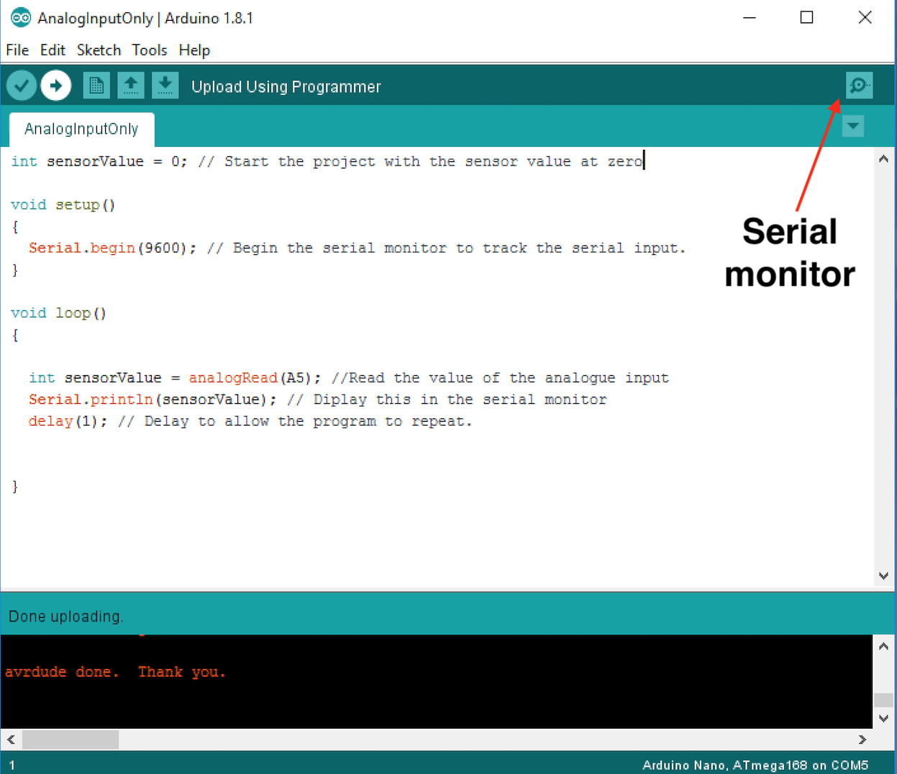
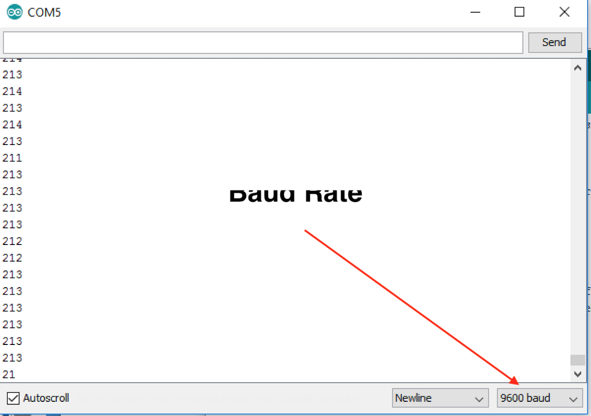
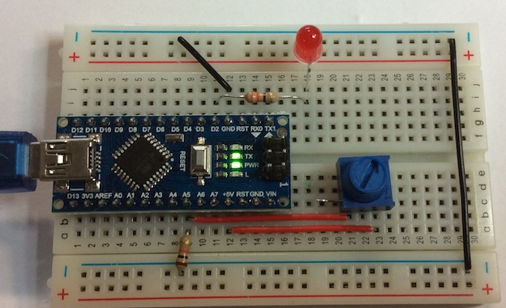
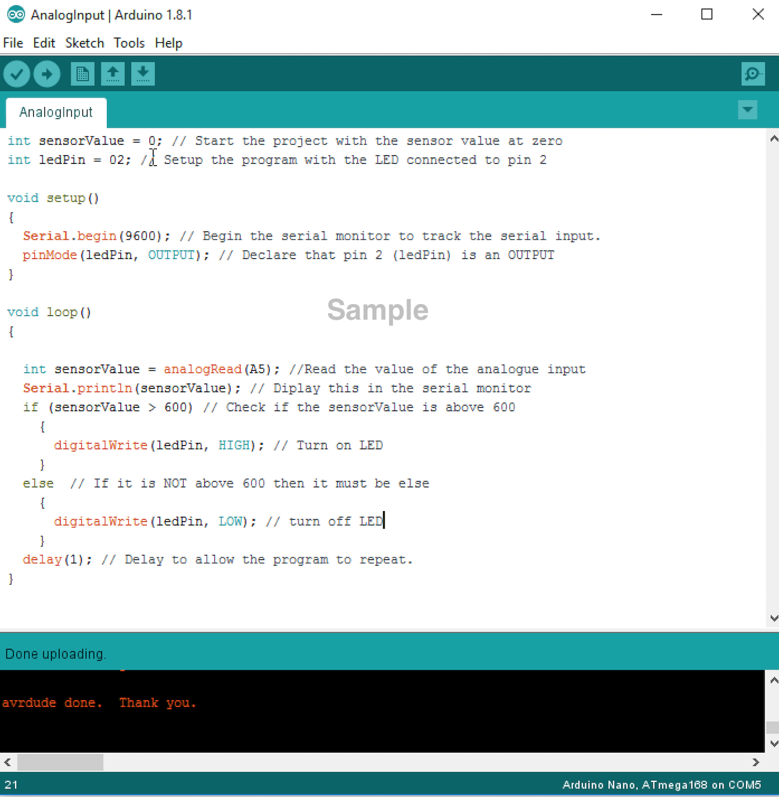

Analogue Input
1 Analogue Inputs
Learn It
- First we need to connect the potentiometer(POT) to the breadboard.
- You will need to bend the one leg of the POT back.

- Now remove the PTM switch.

- Now insert the POT just below where the switch was. Check where the legs go for the switch.

- It should finally look like this.

Prepare Program
- You will now set up a program to monitor the Analogue input.
- To do this, we are going to use the serial monitor.
- The Arduino IDE has a feature that can be a great help in debugging sketches or controlling Arduino from your computer's keyboard. The Serial Monitor is a separate pop-up window that acts as a separate terminal that communicates by receiving and sending Serial Data.
- First, open a new Arduino sketch. Call it AnalogInputOnly.
- Then write the following code to it and download the program to your Arduino.
- Once downloaded, you can click on the serial monitor button in the top right had corner and monitor the POT by turning it clockwise and anti-clockwise.

- Make sure the Baud rate is set to 9600, as it is set up in your program.

- You will now be able to see the value change as you adjust your POT between 0-1023.
- The Genie microcontroller can set a value between 0-255.
Test It
- Lets now write a program to control the LED when the POT is turned to a certain position.
- If your LED was removed, replace it as it was previously in the breadboard.

- Now start a new sketch called AnalogInput and write the following program.

Badge It
- Take a screeshot of your code and upload it to the badge task. Make sure you include the bottom, where is state 'Done uploading'.